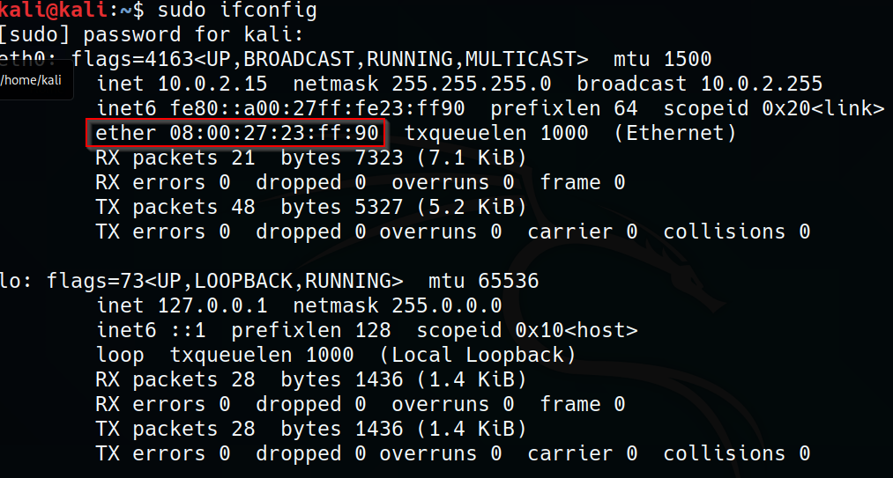

MAC Addresses are important because they utilize Layer 2 or switching.
First three section are identifiers, you can google it and find that device not exact device but generally.
For example if we google it we see that this is a Virtualbox machine and that's all we see.
